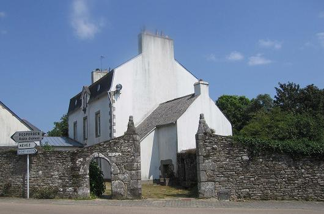

Ar raisin laeret
Le raisin volé
The stolen grapes
Chant collecté par Théodore Hersart de La Villemarqué
dans le 1er Carnet de Keransquer (p. 299-300).

Mélodie
Arrangement Christian Souchon (c) 2015
|
A propos de la mélodie Inconnue. Elle est remplacée par "Laeradeg" ou "La dérobée" publiée par le Colonel Alfred Bourgeois (Source: le site de P. Quentel, "Son ha ton", voir liens). En dépit de son rythme de valse, la "dérobée" appartient à la tradition de danse du Trégor (cf. Musique, in fine). A propos du texte Cette pièce, que La Villemarqué est le seul à avoir recueillie est une composition collective et une "chanson diffamatoire". Ce type de chant a été commenté à propos de Jeunes gens de Nizon. Les passages sautés par le collecteur ou les passages illisibles reconstitués sont en italiques dans le texte breton. Celui-ci comporte une partie principale et une "variante" qui complète celle-ci plus qu'elle ne la modifie. On a regroupé ces deux éléments en un seul texte. |
About the tune Unknown. Replaced here with "Laeradeg" or "La dérobée" published by Colonel Alfred Bourgeois (Source: the site of P. Quentel, "Son ha ton", see links). In spite of its waltz rhythm pattern, the "dérobée" (French leave) belongs to the traditional dances in the Tréguier area (see Musique, in fine). About the lyrics This piece, collected by La Villemarqué only, is both a group composition and a "libel song". This kind of song was already addressed in connection with Nizon's youths. Passages "skipped" by the collector or "restored" (because they are illegible) are in italics in the Breton text which consists of a main part and a "variant". As the latter mostly completes the former, both parts were combined together in the present text. |
|
BREZHONEK p. 299 1. Selaouit [holl hag e klefet Ur zonig nevez zo savet] Savet d'ar merc'hed a vourc'h Nizon [Ha raisin an aotroù person]. 2. [O-deus c'hoantet ar raisin] Deus jardin an aotroù person. O-deus c'hoantet ar raisin dous. Zo aet da laeret deus an noz. 3. Int a zonje da oa kousket, Aet 'n aotroù person d'e wele. [Int a zonje da oa kousket, Aet 'n aotroù person d'e wele.] 4. 'N aotroù person n'oa ket kousket Ha padal en-neus o klevet. Eñ en-neus lazhet e c'houloù Ha deuet d'an traoñ war e loeroù. 5. 'N aotroù person dal! glevas. D'[an traoñ war e loeroù a] zeuas. O zavañjerioù oa trouset. Ar raisin barzh o-doa lakaet. 6. Eñ a lare d'an dud e di: - Laerien a zo 'n ho jardin, c'hwi! - Tud e di ne oant ket prestet; 'N aotroù person en-neus o tapet. 7. Unan anezhe oa ur plac'h fur Hag a zo sailhet dreist ar vur. Aotroù person a oa esprouet Gweled pesort lamm en-defe graet. 8. Un all anezhe oa tammik klouk Hag a oa chomet war ar bord. Ast[ennet e oa rouedoù ouz'h] an ti Hag a lare he stagañ dezhi. p. 300 9. 'N aotroù person 'doa hi paket. He c'hontell ganti oa tennet. He mamm lavare dezhi neuze: - Me roy ar c'hontell endro dit. 10. Kar an tad-koz zo glac'haret, Balamour e rouejoù zo torret. Hag a dalve ouzhpenn tri skoed. - [...] 'N aotroù person zo un den mat: 11. Bonomik koz a oa fachet Dre ma oa e roued torret, [Dre ma oa e roued torret,] Hag a dalve atav tri skoed. 12. - Dalit, Loizaik, ho kontell N'it ket da laerezh ur wech all! Evit ar wech-mañ c'hwi a vo eskuzet. Benn ur wech all, ne laran ket! - 13. Ar sonik-mañ a zo bet savet Barzh Bosulenn en [...] Gant tud hag o-doa spered: Gant masonerien vourc'h Nizon. 14. Gant an dud deus a vourc'h Nizon, Yann ar C'harduner oa ouzhpen. Forzh ne ran gand merc'hed Bourc'hnien: Me ya da chom da Rosporden. 15. E siminal barzh Bosulenn, Eno zo skrivet 'r ganaouenn. Peder deus a viz gwengolo Eo deuet ar zonenn-mañ er vro. Pa ma savet, kanet e vo. Savet gant Mari Bolou ha Yann ar Barzhik KLT gant Christian Souchon |
TRADUCTION FRANCAISE p. 299 1. Ecoutez tous, venez entendre Ce chant qu'on vient de composer Sur les filles de Nizon qui prétendaient S'approprier le raisin du curé. 2. Oui, l'objet de leur convoitise Pendait au milieu du jardin. Ces belles grappes sucrées, par surprise, Furent l'objet d'un nocturne larcin. 3. - Le recteur dort, se disaient-elles, Il dort et ronfle dans son lit. Allons-y donc, l'occasion est trop belle, Nous serons tranquilles toute la nuit. - 4. Mais le recteur ne dormait guère. Voilà qu'il a tout entendu. Aussitôt il éteignit sa lumière Et en chaussettes il est descendu. 5. Le recteur entend leur manège, Descend sur la pointe des pieds. Les grappes dont les coquines l'allègent Pèsent à présent dans leurs tabliers. 6. Le recteur dit aux domestiques: - Des voleurs sont dans le jardin! - Mais ses valets sont saisis de panique; Le recteur doit seul secourir son bien. 7. La voleuse la plus agile Par dessus le mur saute hors. D'un bond tel que le recteur l'imagine Provoqué par un surhumain ressort. 8. Une autre fille un peu plus lente Se laissa saisir sur le bord. - Ce filet suspendu sous la soupente: En fait de liens, que rêver de plus fort? p. 300 9. Monsieur le recteur l'a saisie. Il lui prend son couteau des mains. Sa mère a dit alors, abasourdie: - Je te rendrai son couteau, dès demain! 10. Ton grand-père se désespère, De voir ses filets déchirés. Ils valaient plus de trois écus naguère. Un recteur doit agir avec bonté. 11. Il est fâché, le vieux bonhomme Qu'on ait déchiré ses filets, C'était là toute sa fortune en somme, Ces trois écus ainsi dilapidés. - 12. - Prenez, votre couteau, Louisette, Prenez-le, mais ne volez plus! Pour cette fois je pardonne, peut-être, Pardonner une autre fois: c'est exclu! - 13. - On a fait cette chansonnette A Bossulen, hameau breton Ce sont des gens avisés qui l'ont faite: Des maçons vivant au bourg de Nizon. 14. Au bourg de Nizon ils demeurent, Mis à part moi, Le Carduner. Or, les filles de Nizon m'indiffèrent: A Rosporden je m'en vais habiter. 15. Et cette chanson fut écrite Sur le bord d'une cheminée C'est un quatre septembre qu'on l'a dite, Que dans ce pays elle est arrivée. Puisqu'elle est faite, elle sera chantée. - Chanson levée par Marie Bolou et Jean Le Barzic Traduction: Christian Souchon |
ENGLISH TRANSLATION p. 299 1. Lend an ear all and you shall listen To a song recently composed About the lasses of the town of Nizon And grapes that were in the priest's yard enclosed. 2. The lasses who had been coveting So long the grapes in the priest's yard - These grapes looked so sweet, and they were so tempting! - To steal, one night, they entered the orchard. 3. When they imagined that the parson Was sound asleep there in his bed, They tiptoed to the yard, the girls of Nizon, For the tempting grapes, as already said. 4. The priest was not asleep, fair vandals: Suspicious sounds had reached his ear. Quickly he had blown out his bedside candle And, walking in his socks, he had drawn near. 5. The reverend parson downstairs sneaked Followed by servants armed with sticks. He dimly saw aprons that were extended, Sagging with the grapes busy hands had picked. 6. The parson whispered to his servants: - Thieves...in the yard! It's up to you! - The trembling servants proved shy and reluctant; 'T was a thing they preferred the priest would do. 7. One of those lasses now was nimble And the wall quickly she had jumped. Well knew the parson that thieves are no cripples But wondered at the leap she had performed. 8. Another, less agile, was captured As on the wall she was astride. Someone brought in fishing nets, confiscated To make the bonds with which the thief was tied. p. 300 9. The reverend parson now has seized her By her wrist and taken her knife. The girl's mother said the parson was unfair: The spoiled nets more than equaled the strife. 10. - For her grandfather is much upset, About his fishing nets you tore Though they were still worth three crowns. You're indebted To him, my reverend parson, therefore. 11. Yes, the old man is very angry About his fishing nets you spoiled; Spread them on your wall for the sake of safety; Now he has lost three crowns in the turmoil. - 12. - Here is your knife, Loizaik, come on! But never play the thief again! Just for this one time you shall have my pardon. In a future for sure, I won't refrain! - 13. The present ditty was composed Nearby, in the farm Bosulenn, By a few people known to be spirited: All of them are masons in Nizon town . 14. Native of Nizon town they are all, Excepted me, Le Carduner: I don't care a pin for the girls of Nizon: I am going to live in Rosporden. 15. This song was committed to paper By the fireside at Bosulenn. And it was sung on the fourth of September For the first time around here. Aye, and since then, Since it was made, let us sing it again! Written by Mary Bolou and Yann Le Barzic Translated by Christian Souchon |

Le presbytère de Nizon et son mur